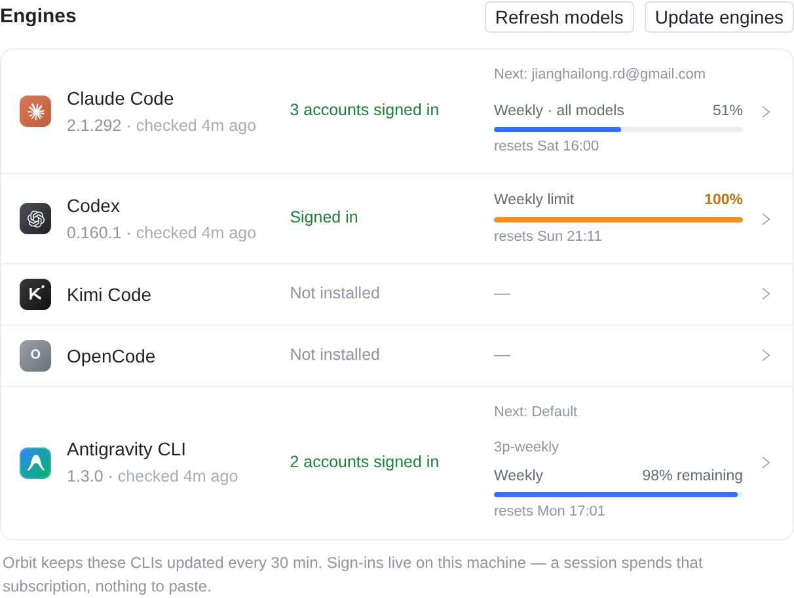
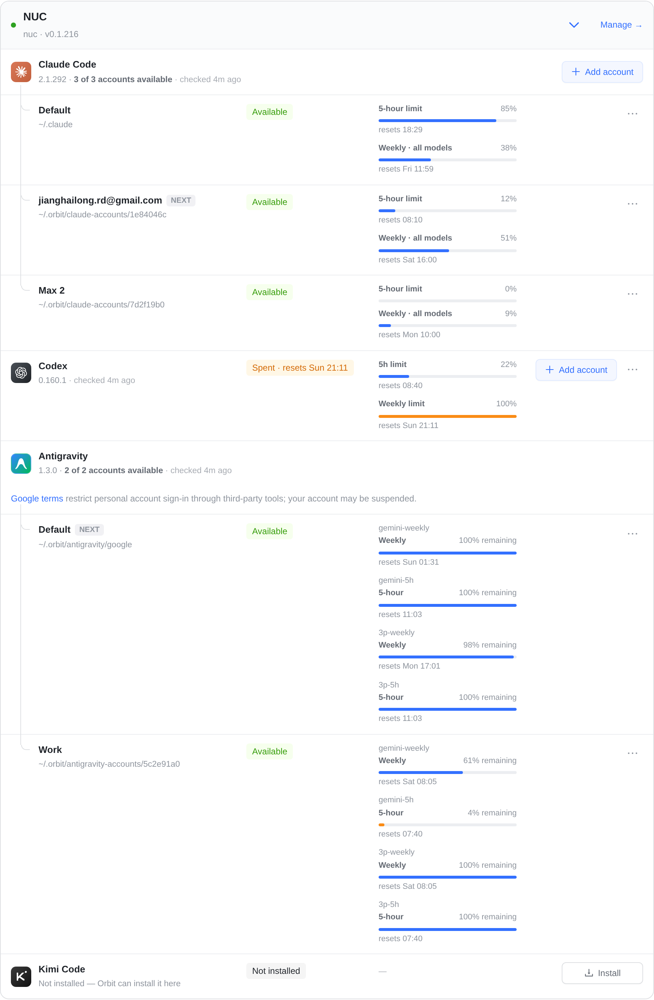

一个引擎登录了两个以上账号时：运行器页的行只说「N accounts signed in」，每个账号的额度都在点进去的引擎页里各列各的。web 运行器页的行多写一句「Next: 某账号」——新会话会自动用的那个账号（Providers 页标 NEXT 的那个）——并挂这个账号的一条额度（这次从全部窗口改成一条，规则同单账号行）。示例机器 NUC：Claude Code 3 个账号、Codex 1 个、Antigravity 2 个，iOS 和 web 用同一份数据。
① 多账号的行只写「3 accounts signed in」「2 accounts signed in」，不挂额度：三个账号的额度各是各的，挂哪一个都会被读成整台机器的。Codex 只有一个账号，按这次的规则挂一条（周额度已用完）。
② 每个账号一行，各自全部额度：Default 四条都还满（3p-weekly 剩 98%），Work 的 gemini-5h 只剩 4%，条变橙。Claude Code、Codex 的引擎页是同一个样子。
③ 没做，等你定：多账号的行和 web 一样写「Next: 某账号」，挂这个账号最接近上限的那一条。这样 iOS 和 web 一致，每个登录了的引擎行都正好一条额度。Claude Code 的 Next 是 jianghailong.rd@gmail.com（周额度 51%）；Antigravity 的 Next 是 Default（3p-weekly 剩 98%）。
a 有一个账号掉线：写 Signed out，下面一个 Sign In，点进去就是掉线的那个账号（现在就是这样，不变）。b 选了 ③ 之后，三个账号都用完时：Next 是最早恢复的那个，挂它用完的那条，橙色并写明几点恢复。

④ 多账号的行：「Next: jianghailong.rd@gmail.com」下面原来挂这个账号的两条（5-hour、Weekly），现在只挂最接近上限的 Weekly · all models 51%；Antigravity 原来挂 Default 的四条，现在只挂 3p-weekly 98% remaining。

⑤ 管账号的地方：每个账号一行、全部额度，新会话会用的那个标 NEXT。
| 位置 | 显示 | 这次 |
|---|---|---|
| iOS / macOS 运行器页的行 | 「N accounts signed in」，不挂额度 | 不变（③ 可选） |
| iOS / macOS 引擎页 | 每个账号一行，各自全部额度 | 不变 |
| web 运行器页的行 | 「N accounts signed in」+「Next: 账号」+ 这个账号的一条 | 全部窗口 → 一条 |
| web Providers 页 | 每个账号全部额度，下一个用的标 NEXT | 不变 |
| 有账号掉线 | 行上写「Signed out」，iOS 多一个 Sign In | 不变 |
CodexAccounts.toStartOn 选 Next，和 web 同一个规则；引擎页不动。